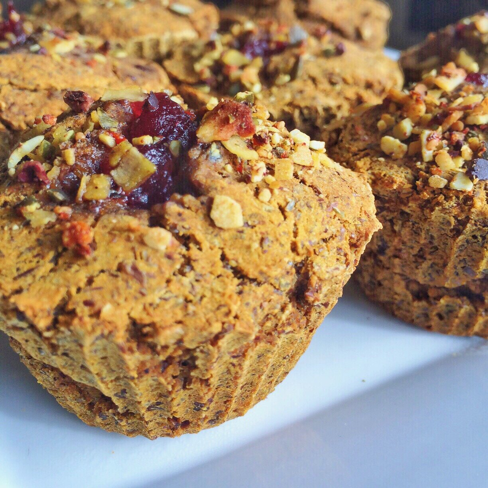
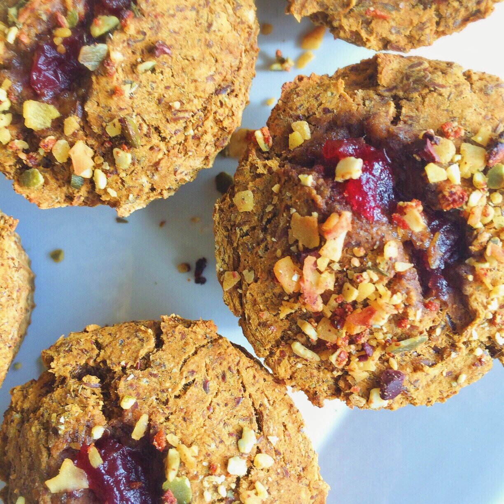

Cranberry Stuffed Pumpkin Muffins (vegan, gluten free)

Processed with VSCOcam with t1 preset

Processed with VSCOcam with t1 preset
Woooo pumpkin + cranberry is my new favorite thingggg since that oatmeal yesterday!
Current goal: understanding how to bake with plant-based protein powders. So first I'm focusing on rice protein. Today I made some cranberry stuffed pumpkin muffins. Kinda sorta really love this texture!!
Cranberry Stuffed Pumpkin Muffins
Makes: 8 muffins
-
1 cup canned pumpkin purée
-
1 cup baking stevia
-
1 cup ground flax meal
-
1/2 cup buckwheat flour
-
2 scoops brown rice protein (30 g total)
-
3 TBSP unsweetened applesauce
-
1 tsp vanilla extract
-
1 tsp nutmeg
-
1 tsp ground cloves
-
1/4 tsp ground ginger
-
2 tsp baking soda
-
1/4 cup organic whole cranberry sauce
Preheat the oven to 375 F. Mix everything except for the cranberry sauce (should be thick, but if TOO thick, add a wee little water). Spray a cupcake pan with nonstick spray and divide the batter between 8 cupcake molds. Create a crater inside the middle of each muffin, and add 1/2 tbsp of the cranberry sauce into the crater of each muffin. Bake at 375 F for 16-20 mins.
1 muffin: 130 cals; 5 g fat, 16 g carbs, 8 g protein